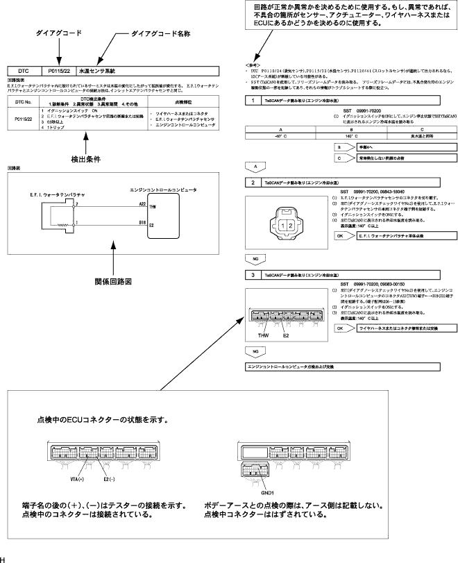

How to troubleshoot the ECU control system DTC -based inspection flow
printing
The following shows how to read and use each page.
Troubleshooting has a procedure for each DTC, system, and symptoms, making it easier to investigate the cause.
The procedure of troubleshooting is posted as [DTC], [Circuit description], [Detection Conditions], [Circuit diagram], and [Inspection procedure].
